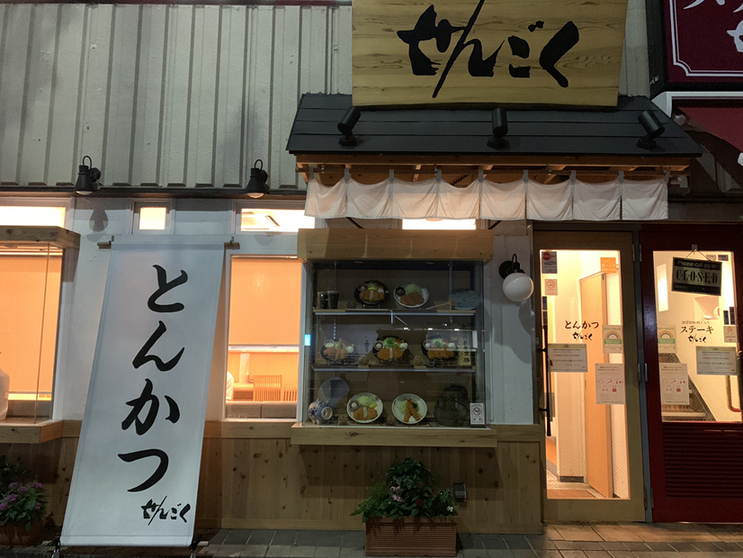
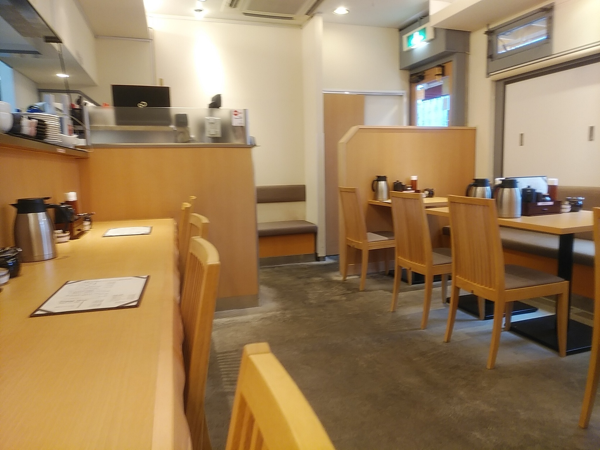
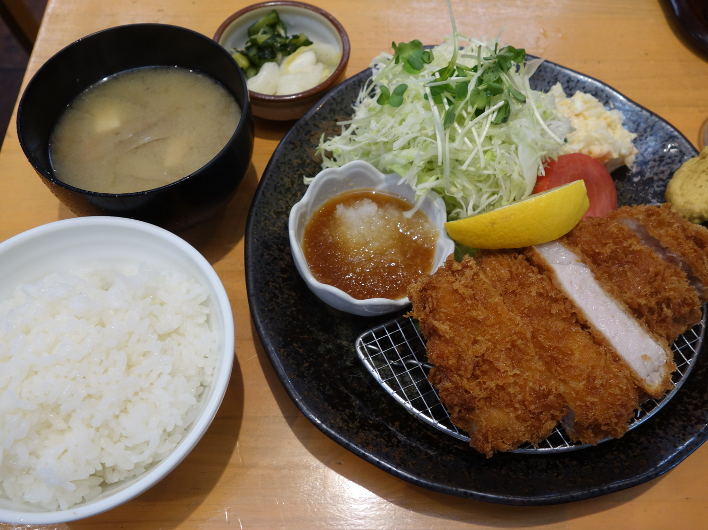

[東京 水道橋]
とんかつ せん石 本郷店

おすすめのポイント
都営三田線春日駅から、歩いて１分ほどのところにあるお店です。
このお店は、私の職場が近いとう事もあり、よく利用します。
席は、カウンターとテーブルがあります。

近くに、マックなどの飲食店が並んでおり、そちらに人が流れるせいか、比較的空いています。
メニューは、定食のみとなっていますが、どれもが絶品の美味しさです。
また、ご飯のおかわりも無料となっており、おすすめです。

お店の情報
| 店名 | とんかつ せん石 本郷店 （せんごく） |
|---|---|
| 住所 | 東京都文京区本郷4-25-8 猪尾ビル １Ｆ |
| アクセス | 都営三田線春日駅から191m |
| 電話 | 03-5689-0930 |
| 営業時間 | 11:00～23:30(L.O.22:50)
日曜営業 |
| 定休日 | 無休
|
| 予算 |
ランチ 1000〜1999円
ディナー 1000〜1999円 |
| HP | https://www.sengokuga.com/ |